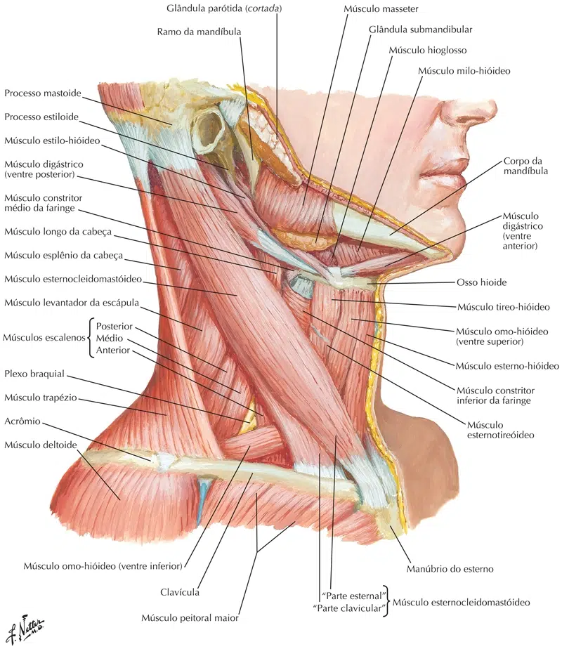

Inserção Superior: Tubérculos anteriores dos processos transversos da 3ª à 6ª vértebras cervicais. Inserção Inferior: Face superior da 1º costela (tubérculo do escaleno anterior). Inervação: Ramos dos nervos cervicais inferiores. Ação: Elevação da primeira costela e inclinação homolateral do pescoço. Ação inspiratória.
https://teachmeanatomy.info/
Escaleno médio
Inserção Superior: Tubérculos anteriores dos processos transversos da 2ª à 7ª vértebras cervicais. Inserção Inferior: Face superior da 1ª costela. Inervação: Ramos dos nervos cervicais inferiores. Ação: Elevação da primeira costela e inclinação homolateral do pescoço. Ação inspiratória.
https://teachmeanatomy.info/
Escaleno posterior
Inserção Superior: Tubérculos posteriores dos processos transversos da 5ª à 7ª vértebras cervicais. Inserção Inferior: Borda superior da 2ª costela. Inervação: Ramos anteriores dos 3 últimos nervos cervicais. Ação: Elevação da segunda costela e inclinação homolateral do pescoço. Ação inspiratória.
https://teachmeanatomy.info/
NETTER: Frank H. Netter Atlas De Anatomia Humana. 7 ed. Rio de Janeiro: Elsevier, 2021.

NETTER: Frank H. Netter Atlas De Anatomia Humana. 7 ed. Rio de Janeiro: Elsevier, 2021.